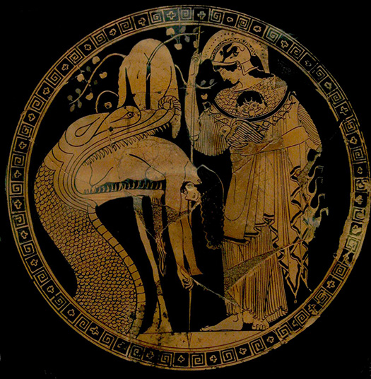
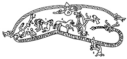
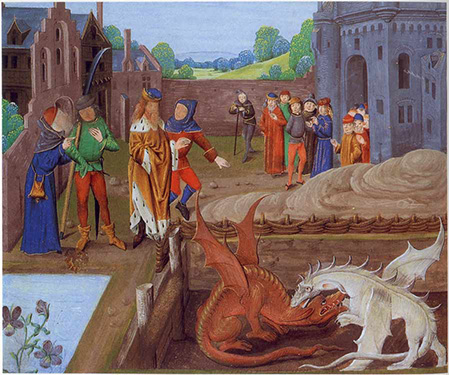
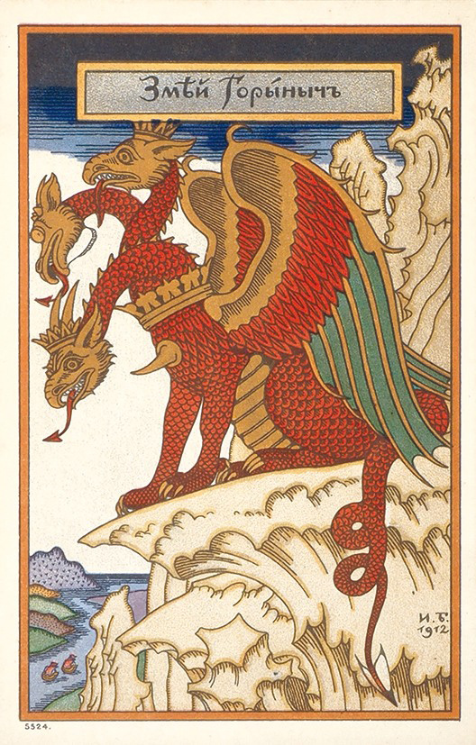

European folklore
Ancient Greek

Attic red-figure kylix painting from c. 480–470 BC showing Athena observing as the Colchian dragon disgorges the hero Jason[100][101]
The ancient Greek word usually translated as "dragon" (δράκων drákōn, genitive δράκοντοϛ drákontos) could also mean "snake",[94][6] but it usually refers to a kind of giant serpent that either possesses supernatural characteristics or is otherwise controlled by some supernatural power.[95] The first mention of a "dragon" in ancient Greek literature occurs in the Iliad, in which Agamemnon is described as having a blue dragon motif on his sword belt and an emblem of a three-headed dragon on his breast plate.[96] In lines 820–880 of the Theogony, a Greek poem written in the seventh century BC by the Boeotian poet Hesiod, the Greek god Zeus battles the monster Typhon, who has one hundred serpent heads that breathe fire and make many frightening animal noises.[85] Zeus scorches all of Typhon's heads with his lightning bolts and then hurls Typhon into Tartarus. In other Greek sources, Typhon is often depicted as a winged, fire-breathing serpent-like dragon.[97] In the Homeric Hymn to Apollo, the god Apollo uses his poisoned arrows to slay the serpent Python, who has been causing death and pestilence in the area around Delphi.[98][97][99] Apollo then sets up his shrine there.[97]
Post-classical Germanic

Drawing of the Ramsund carving from c. 1030, illustrating the Völsunga saga on a rock in Sweden. At (5), Sigurd plunges his sword into Fafnir's underside.
In the Old Norse poem Grímnismál in the Poetic Edda, the dragon Níðhöggr is described as gnawing on the roots of Yggdrasil, the world tree.[135] In Norse mythology, Jörmungandr is a giant serpent that encircles the entire realm of Miðgarð in the sea around it.[136] According to the Gylfaginning from the Prose Edda, written by the thirteenth-century Icelandic mythographer Snorri Sturluson, Thor, the Norse god of thunder, once went out on a boat with the giant Hymnir to the outer sea and fished for Jörmungandr using an ox-head as bait.[136] Thor caught the serpent and, after pulling its head out of the water, smashed it with his hammer, Mjölnir.[136] Snorri states that the blow was not fatal: "and men say that he struck its head off on the sea bed. But I think the truth to tell you is that the Miðgarð Serpent still lives and lies in the surrounding sea."[136]
Towards the end of the Old English epic poem Beowulf, a slave steals a cup from the hoard of a sleeping dragon,[137] causing the dragon to wake up and go on a rampage of destruction across the countryside.[138] The eponymous hero of the poem insists on confronting the dragon alone, even though he is of advanced age,[139][140] but Wiglaf, the youngest of the twelve warriors Beowulf has brought with him, insists on accompanying his king into the battle.[141] Beowulf's sword shatters during the fight and he is mortally wounded,[142][143] but Wiglaf comes to his rescue and helps him slay the dragon.[143] Beowulf dies and tells Wiglaf that the dragon's treasure must be buried rather than shared with the cowardly warriors who did not come to the aid of their king.[14]
Post-classical Western

Fifteenth-century manuscript illustration of the battle of the Red and White Dragons from Geoffrey of Monmouth's History of the Kings of Britain
The modern, western image of a dragon developed in western Europe during the Middle Ages through the combination of the snakelike dragons of classical Graeco-Roman literature, references to Near Eastern dragons preserved in the Bible, and western European folk traditions.[149] The period between the eleventh and thirteenth centuries represents the height of European interest in dragons as living creatures.[150] The twelfth-century Welsh monk, Geoffrey of Monmouth, recounts a famous legend in his Historia Regum Britanniae in which the child prophet Merlin witnesses the Romano-Celtic warlord Vortigern attempt to build a tower on Mount Snowdon to keep safe from the Anglo-Saxons,[151] but the tower keeps being swallowed into the ground.[151] Merlin informs Vortigern that, underneath the foundation he has built, is a pool with two dragons sleeping in it.[151] Vortigern orders for the pool to be drained, exposing a red dragon and a white dragon, who immediately begin fighting.[151] Merlin delivers a prophecy that the white dragon will triumph over the red, symbolizing England's conquest of Wales,[151] but declares that the red dragon will eventually return and defeat the white one.[152] This story remained popular throughout the fifteenth century.[152]
Dragons are generally depicted as living in rivers or having an underground lair or cave.[153] They are envisioned as greedy and gluttonous, with voracious appetites.[149] They are often identified with Satan, due to the references to Satan as a "dragon" in the Book of Revelation.[149] The thirteenth-century Golden Legend, written in Latin, records the story of Saint Margaret of Antioch,[43] a virgin martyr who, after being tortured for her faith in the Diocletianic Persecution and thrown back into her cell, is said to have been confronted by a monstrous dragon,[43] but she made the sign of the cross and the dragon vanished.[43] In some versions of the story, she is actually swallowed by the dragon alive and, after making the sign of the cross in the dragon's stomach, emerges unharmed.[43]
Post-classical Eastern

Zmey Gorynych, a three-headed dragon from Russian folklore.
In Russian and Ukrainian folklore, Zmey Gorynych is a dragon with three heads, each one bearing twin goatlike horns.[171] He is said to have breathed fire and smelled of sulfur.[171] It was believed that eclipses were caused by Gorynych temporarily swallowing the sun.[172] According to one legend, Gorynych's uncle was the evil sorcerer Nemal Chelovek, who abducted the daughter of the tsar and imprisoned her in his castle in the Ural Mountains.[172] Many knights tried to free her, but all of them were killed by Gorynych's fire.[172] Then a palace guard in Moscow named Ivan Tsarevich overheard two crows talking about the princess.[173] He went to the tsar, who gave him a magic sword, and snuck into the castle.[174] When Chelovek attacked Ivan in the form of a giant, the sword flew from Ivan's hand unbidden and killed him.[174] Then the sword cut off all three of Gorynych's heads at once.[174] Ivan brought the princess back to the tsar, who declared Ivan a nobleman and allowed him to marry the princess.[174]
A popular Polish folk tale is the legend of the Wawel Dragon. The dragon appeared during the reign of King Krakus[176] and demanded to be fed a fixed number of cattle every week.[176] If the villagers failed to provide enough cattle, the dragon would eat the same number of villagers as the number of cattle they had failed to provide.[176] Krakus ordered his sons to slay the dragon.[176] Since they could not slay it by hand,[176] they tricked the dragon into eating calfskins filled with burning sulfur.[176] Once the dragon was dead, the younger brother attacked and murdered his older brother and returned home to claim all the glory for himself,[176] telling his father that his brother had died fighting the dragon.[176] The younger brother became king after his father died, but his secret was eventually revealed and he was banished.[176] In the fifteenth century, Jan Długosz rewrote the story so that King Krakus himself was the one who slew the dragon.[175][176][177] Another version of the story told by Marcin Bielski instead has the clever shoemaker Skuba come up with the idea for slaying the dragon.[176][178] Bielski's version is now the most popular.[176]